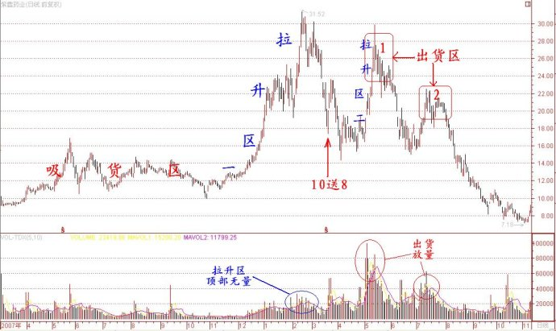

第31篇•紫鑫药业:一个产业资本型庄股的覆灭
谷为陵
1、何谓产业资本型庄家
在全流通时代，由于产业资本占有70%的股份，因此，产业资本就替代金融资本而成为了资本市场的主导力量。从持股量看，产业资本至少在理论上已经是股市里的“明庄”，但并非所有产业资本都是实际上的庄家。
何谓庄家？庄家就是通过操纵股价而牟取不当利益的机构或者个人。庄家可分为传统型庄家与产业资本型庄家两大类。传统型庄家是以操纵某只股票的公众流通股并以之为全部盈利来源的庄家，我们常说的二级市场庄家与游资都属此类。产业资本庄家则是以操纵某只股票所有股份，以获得该股票所有股份的整体收益的庄家，该类庄家就是上市公司的控股股东。与传统型庄家相比，产业资本型庄家具有三个独有的优势：一是持有绝大多数流通股，是公司的控股股东；二是拥有上市公司的经营权，可以控制和操纵公司的一切经营活动；三是独揽上市公司重大信息的制造和发布大权，可以随意制造和发布公司重大信息为其所用。
因此，这两类庄家操纵股价的手段与目的有相同之处，也有不同之处。
对于传统型庄家来说，操纵股价的手段是资金操纵，即利用资金优势控制股价走势，而其操纵股价的目的是为了获得公众流通股的股价差价收益。
对于产业资本型庄家来说，操纵股价的手段既包括资金操纵，还包括信息操纵。在资金操纵方面，虽然控股股东一般不直接动用资金炒作股票，但他们可以与传统型庄家合作，让传统型庄家动用资金炒作，产业资本给予必要的配合；在信息操纵方面，控股股东可以通过制造和发布上市公司重大信息，引导股价涨跌，特别是发布重大利好信息引导股价暴涨。在牟取的利益方面，产业资本所谋求的利用是多方面的，大致有四类：一是与传统型庄家合作，分享炒作公众流通股的股价差价收益；二是待股价涨高后，在股价高位增发圈钱；三是在股价高位减持大非与小非等“原始股”，四是在股价低位时增持股份，在股价高位时减持所增持股份股份，获得增持股的差价收益。
产业资本作为资本市场的主导力量，力量是如此的强大，既可繁荣市场，也可毁灭市场。当其合法经营，本着做大做强上市公司、为投资者创造最大化的回报为目的，那么，则可兴市场；若只顾产业资本的一己私利，而置其他投资者的利益于不顾，甚至不惜采用各种虚假、欺骗手段践踏其他投资者的利益，那么，就必定会毁市场。
紫鑫药业就是一个产业资本毁市场的典型案例。紫鑫药业曾是中小板里绩优成长股的代表，也是这几年股市的大牛股，其股价自2008年至2011年8月不到3年的时间里翻了11倍。但是，在该股牛气冲天的背后，却隐藏着不可告人的秘密与丑闻，原来有关该股的所有荣光都是其控股股东恶意操纵的结果。该股控股股东通过自买自卖方式，虚构主营收入与利润数据，将该股“成功地”打造成了一只绩优成长股，其造假的恶劣程度甚至超过“造假大王”银广夏。在中国证监会宣布对紫鑫药业立案稽查后，公司历时两个多月，今天终于给出了一份自查报告。从自查结果看，紫鑫药业承认公司2010年第二、三大客户千草药业、正德药业，以及2011年重要客户通化鸿涛与上市公司存在巨额内部交易，而且这些交易均未履行必要的审议程序，更未如实披露。
该股今天复牌后，就毫无悬念地直接封上跌停板。重仓持有紫鑫药业的泰达宏利基金发布的最新估值调整公告已将紫鑫药业估值降至15.48元，较紫鑫药业停牌时的20.71元下调了近三个跌停板。我认为，若该股存在后续问题的话，三个跌停板还不见得站得住。
毫无疑问，紫鑫药业是一只典型的产业资本型大庄股。那么，紫鑫药业的控股股东为何要冒险操纵业绩与股价呢？他们到底要达到何种目的？他们是怎样操纵业绩与股价的？对于这些问题的深入研究，有助于我们加深对全流通时代的产业资本的运作思路与手法的认识。我下面谈谈该股的坐庄过程与坐庄动机。
2、紫鑫药业的坐庄过程
如果仔细研究紫鑫药业自2007年3月上市以来的股价走势，可以发现该股自上市后就成为了一只庄股，不过其坐庄过程可以分为两个阶段。第一阶段是2007年3月至2008年10月底，第二阶段是2008年11月至2011年8月。
为什么说该股存在第一阶段的坐庄过程呢？这是因为在该阶段该股不仅存在明显的吸货、拉升和出货的走势，而且上市公司也给予了高送股题材的充分配合，符合庄股的典型特征。其第一阶段的坐庄过程如下图所示：

但该股第一阶段坐庄并不成功，主要原因是该次坐庄没有踏准股市的节奏，其拉升和出货阶段赶在了牛市见顶之际，属于逆市而为。
第一阶段的吸货期是2007年3月至2007年10月，在其吸完货后的股市就见顶回落了，实际上是牛市结束了，熊市来临了。因此，当该股进入拉升阶段的时候，正是大盘开跌的时候。逆市而为的结果自然是不好，一是拉升费劲，二是拉高后没有买盘，难以出货。
从上图可以看出，该股在“拉升区一”的顶部的成交量并没有放大，这说明庄家在此时还没有出货，或者更确切地说，是无法出货。在股市不好的情况下，庄家必须借助大利好才能够退出，否则将会“自我套牢”。对于高价股来说，最大的利好就是高送股。于是，在该股随着大盘见顶回落之际，上市公司适时推出了10送8的高送股方案。我们知道，在熊市里，上市公司一般是不会高送股的。因为高送股的目的是为了通过除权将股价降低，造成所谓的价格幻觉，但在熊市里，股价天天下跌，价格不断下降，还需要什么高送股除权吗？所以，该股在熊市中退出高送股方案就是为了让庄家能够撤退。在该股除权后，股价有被庄家强力拉升了一波（上图中的“拉升区二”）。在“拉升区二”顶部的“出货区1”，是该股庄家的主要出货区域。可以看出，在“出货区1”，该股成交量急剧放大，但股价却没有创出新高，放量滞涨就是庄家出货的特征。由于大盘极弱，庄家在“出货区1”出货并不顺利，于是在“出货区2”继续出货。在该庄家将大部分筹码卖出后，因再无人护盘，该股股价就从20元一路暴跌到7元多。
应该说，该庄家第一阶段的盈利率并不高。我计算了一下，庄家的平均吸货成本约在14元，而平均出货价格约为22元，毛盈利率约为60%。但若除去资金成本、操作成本等项，庄家的实际盈利率应该在30%左右。
当该股股价随大盘见底而跌到7元多的时候，该股庄家又一次介入其中，进行了第二阶段的坐庄过程，如下图所示：
第二阶段坐庄有四个特点：
一是吸货期更长。该次吸货期自2008年11月底至2010年初，长达一年多。
二是洗盘充分。庄家在完成吸货后，自2010年初至9月份，进行了9个月的洗盘，彻底清洗了浮筹，为大幅拉高股价找了充分的准备。而庄家在第一阶段，因时间仓促几乎没有洗盘，致使股价在顶部卖压沉重。
三是利好题材更大。在该阶段坐庄期间，上市公司不仅连续两次推出10送7和10送10的高送股题材，更重要的是制造了业绩暴增题材。我在前面的博文中多次提到，产业资本坐庄的最重要的一类题材就是“业绩暴增+高送股”。
四是动用公共关系，制造产业大概念。该公司控股股东打出整合吉林人参大产业的概念，吸引了众多机构投资者的眼球，并使该股成功增发，圈钱高达10亿元。
在该股的拉升阶段，可细分为“拉升区1”
和“拉升区2”两部分。“拉升区1”是庄家自己拉升的，而“拉升区2”是在该公司连续发布利好后，包括基金等投资者“抬轿”，将股价拉起来的。
3、控股股东的坐庄动机
在该股坐庄的第一阶段，其主要目的是为了获得公众流通股股价差价。因为当时该股刚刚上市，大小非还未解禁，减持还不可能。另外，该股刚上市，增发圈钱沿海过早。因此，通过坐庄赚取股价公众流通股差价只能是唯一的目的。
在该股第二阶段，控股股东的目的就不一样了，这次坐庄有三方面的目的：一是获得公众流通股股价差价，二是为了在股价高位增发圈钱，三是为即将开始的原始股减持做股价准备。
实际上，庄家的前两个目的已经达到。一是该股自2008年底至2011年8月，股价上涨了11倍，庄家账面获利丰厚，与第一次坐庄所得的30%的盈利率不可同日而语。二是该公司在2010年在股价高位成功增发，圈钱达10亿元之巨。
现在的问题是，该公司圈这么多钱干什么？按照该公司的说法，是为了整合吉林的人参产业。这或许是该公司的目的。但为了得到整合产业所需巨资，就必须依靠直接融资。而直接融资，是要说动大机构掏钱，而这些大机构不仅要“听故事”，还要看公司实际的经营情况、业绩情况等。该公司控股股东还是有自知之明，知道实话实说，是没有人敢兴趣的，于是，为了给脸上贴金，就不得不造假。通过业绩造假，该股成为一只绩优成长股，受到机构的追捧。在参与其增发的机构中，包括“吉林长白山股权投资管理有限公司”、“
天津硅谷天堂鲲鹏股权投资公司”、“太平人寿保险有限公司”所属基金等大机构都被骗了进去。通过业绩造假和高送股，该股股价一涨再涨，使得上市公司能够在股价高位增发股份，使同样的股份换取更多的资金。控股股东是很会算账的。
如若此次该公司的造价行为没有东窗事发，我相信该公司的造假会愈演愈烈。为什么？因为通过造假可以获得很多好处，造假而获好处会使产业资本如染上毒瘾般，虽知其犯罪，但却是欲罢不能。